Hovercraft Path Planning
In this case study, we seek to determine an optimal control policy for the trajectory of a hovercraft that travels to a set of dynamic waypoints while trying to minimize the thrust input.
Formulation
The corresponding dynamic optimization problem is expressed:
\[\begin{aligned} &&\underset{x(t), v(t), u(t)}{\text{min}} &&& \int_{t \in T} |u(t)|_2^2 dt \\ &&\text{s.t.} &&& v(0) = v0\\ &&&&& \frac{dx}{dt} = v(t), && t \in T\\ &&&&& \frac{dv}{dt} = u(t), && t \in T\\ &&&&& x(t_i) = xw_i, && i \in I \end{aligned}\]
where $x(t)$ is the Cartesian position, $v(t)$ is the velocity, $u(t)$ is the thrust input, $xw_i, \ i \in I,$ are the waypoints, and $T$ is the time horizon.
Model Definition
Let's implement this in InfiniteOpt and first import the packages we need:
using InfiniteOpt, IpoptNext we'll specify our waypoint data:
xw = [1 4 6 1; 1 3 0 1] # positions
tw = [0, 25, 50, 60]; # times
We initialize the infinite model and opt to use the Ipopt solver:
m = InfiniteModel(optimizer_with_attributes(Ipopt.Optimizer, "print_level" => 0));
Let's specify our infinite parameter which is time $t \in [0, 60]$:
@infinite_parameter(m, t in [0, 60], num_supports = 61)tNow let's specify the decision variables:
@variables(m, begin
# state variables
x[1:2], Infinite(t)
v[1:2], Infinite(t)
# control variables
u[1:2], Infinite(t), (start = 0)
end)Specify the objective:
@objective(m, Min, ∫(u[1]^2 + u[2]^2, t))∫{t ∈ [0, 60]}[u[1](t)² + u[2](t)²]Set the initial conditions with respect to the velocity:
@constraint(m, [i = 1:2], v[i] == 0, DomainRestrictions(t => 0))2-element Vector{InfOptConstraintRef}:
v[1](t) = 0.0, ∀ t = 0
v[2](t) = 0.0, ∀ t = 0Define the point physics ODEs which serve as our system model:
@constraint(m, [i = 1:2], ∂(x[i], t) == v[i])
@constraint(m, [i = 1:2], ∂(v[i], t) == u[i])2-element Vector{InfOptConstraintRef}:
∂/∂t[v[1](t)] - u[1](t) = 0.0, ∀ t ∈ [0, 60]
∂/∂t[v[2](t)] - u[2](t) = 0.0, ∀ t ∈ [0, 60]Ensure we hit all the waypoints:
@constraint(m, [i = 1:2, j = eachindex(tw)], x[i] == xw[i, j], DomainRestrictions(t => tw[j]))2×4 Matrix{InfOptConstraintRef}:
x[1](t) = 1.0, ∀ t = 0 x[1](t) = 4.0, ∀ t = 25 x[1](t) = 6.0, ∀ t = 50 x[1](t) = 1.0, ∀ t = 60
x[2](t) = 1.0, ∀ t = 0 x[2](t) = 3.0, ∀ t = 25 x[2](t) = 0.0, ∀ t = 50 x[2](t) = 1.0, ∀ t = 60Problem Solution
Optimize the model:
optimize!(m)
******************************************************************************
This program contains Ipopt, a library for large-scale nonlinear optimization.
Ipopt is released as open source code under the Eclipse Public License (EPL).
For more information visit https://github.com/coin-or/Ipopt
******************************************************************************
Extract the results:
x_opt = value.(x);
Plot the results:
using Plots
scatter(xw[1,:], xw[2,:], label = "Waypoints", background_color = :transparent)
plot!(x_opt[1], x_opt[2], label = "Trajectory")
xlabel!("x_1")
ylabel!("x_2")
That's it, now we have our optimal trajectory!
Maintenance Tests
These are here to ensure this example stays up to date.
using Test
@test termination_status(m) == MOI.LOCALLY_SOLVED
@test has_values(m)
@test x_opt isa Vector{<:Vector{<:Real}}Test PassedThis page was generated using Literate.jl.